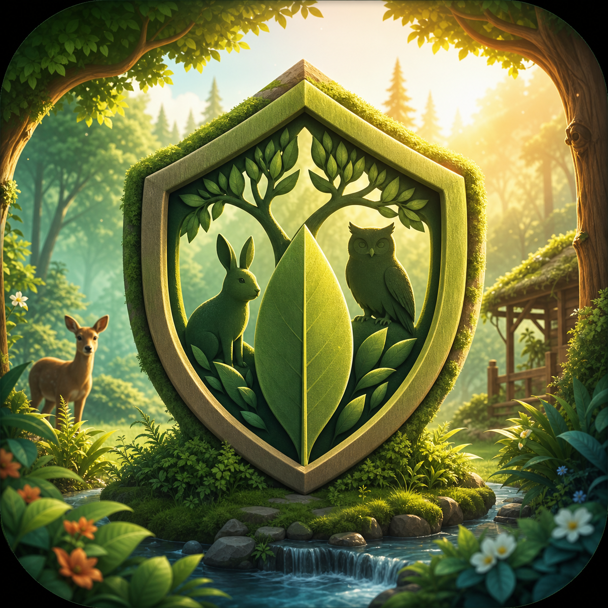

보호구역 성장
보호 포인트를 모아 보호구역 레벨을 올리고, 더 안정적인 회복 환경을 만들어 갑니다.

Wild Haven Idle와일드 헤이븐 — 숲속 보호구역 방치형
작은 야생동물 보호구역을 운영하며 보호 포인트를 모으고, 구조 동물의 회복을 지원하고, 서식지를 복원해 나가는 조용한 방치형 성장 게임입니다.
최신 signed APK는 GitHub Releases에서 받을 수 있습니다. Android 기기에서 설치하려면 시스템 설정에서 알 수 없는 앱 설치 권한이 필요합니다.
Wild Haven Idle의 중심은 단일 캐릭터 관리가 아니라 보호구역 복원입니다. 짧게 돌아와도 성장한 흔적을 확인할 수 있도록 설계합니다.
보호 포인트를 모아 보호구역 레벨을 올리고, 더 안정적인 회복 환경을 만들어 갑니다.
구조 동물은 회복 단계와 적응 단계를 거치며 보호구역에 안정적으로 머뭅니다.
잠김, 발견, 보호 중 상태를 구분하고 보호구역의 기록을 차곡차곡 채웁니다.
앱을 오래 붙잡지 않아도 다음 목표가 보이는 MVP 플레이 흐름입니다.
초기 버전은 숲 기반 보호구역에서 시작하는 5종의 구조 동물을 목표로 합니다.
| ID | 이름 | 희귀도 | 해금 조건 |
|---|---|---|---|
rabbit_001 |
숲토끼 | COMMON | 최초 시작 시 자동 등록 |
fox_001 |
붉은여우 | COMMON | carePoint 300 보유 |
deer_001 |
어린 사슴 | UNCOMMON | 숲토끼 회복 단계 5 |
owl_001 |
밤부엉이 | UNCOMMON | 총 생산량 5/sec |
lynx_001 |
스라소니 | RARE | 보호 중 동물 4종 |
MVP는 로그인, 광고, 결제, 분석 SDK, 푸시 알림, 서버 API 없이 로컬 우선으로 설계합니다. 동물 보호 테마를 감정 압박이나 과금 유도에 사용하지 않습니다.